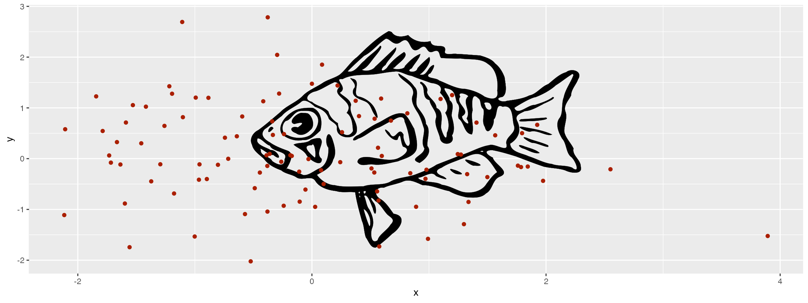
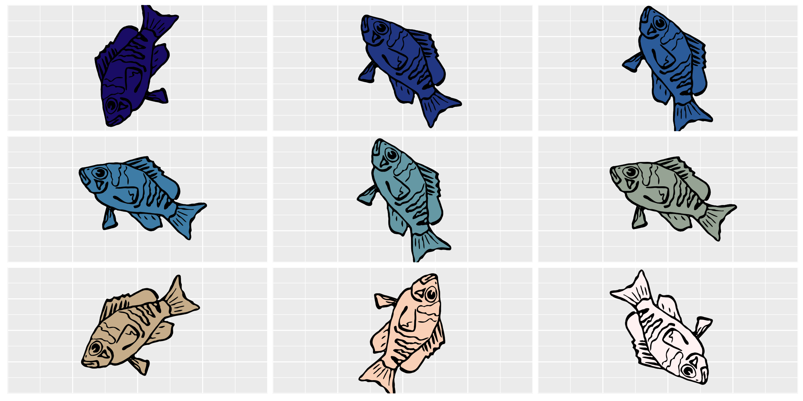

Load svg files
The hypoimg package provides tools read external svg files into R to use for plot annotation. (The svg needs to be a cairo svg - to transform your svg into this format use the rsvg package)
rsvg::rsvg_svg("image.svg","image.c.svg")
library(tidyverse)
library(grImport2)
library(grid)
library(gridSVG)
svg_file <- system.file("extdata", "logo.c.svg", package = "hypoimg")
svg <- hypo_read_svg(svg_file)
ggplot(tibble(x=rnorm(100),y=rnorm(100)))+
annotation_custom(svg)+
geom_point(aes(x=x,y=y),
color="#AA1F00")
Recolor single layer
Individual layers of the image can be recolored using the hypo_recolor_svg() function:
svg_new <- hypo_recolor_svg(svg, layer = 1, color = "#2B5B99")
ggplot()+
annotation_custom(svg_new)This can be used to create a table of color variants:
n = 9
tab <- hypo_recolor_grob_table(svg,
LETTERS[1:n],
scico::scico(n, palette = 'lapaz'),
angle = rnorm(n)*60,
layer = 1)
ggplot(tibble(x=1:2),aes(x=x,y=x))+
geom_hypo_grob(data=tab,
aes(grob=grob,x=x,y=y,
angle=angle),
width=.6)+
facet_wrap(grp~.,ncol = 3)+
theme(text=element_blank(),
axis.ticks = element_blank())
Finally, hypo_recolor_svg() can be applied multiple times to recolor several layers:
svg_file_2 <- system.file("extdata", "logo2.c.svg", package = "hypoimg")
svg_2 <- hypo_read_svg(svg_file_2)
clr <- scico::scico(25)
ggplot()+
annotation_custom(svg_2,xmax = .5)+
annotation_custom(svg_2 %>%
hypo_recolor_svg(.,layer = 1,clr[1]) %>%
hypo_recolor_svg(.,layer = 2,clr[8]) %>%
hypo_recolor_svg(.,layer = 3,clr[16]) %>%
hypo_recolor_svg(.,layer = 4,clr[24]),
xmin = .5)